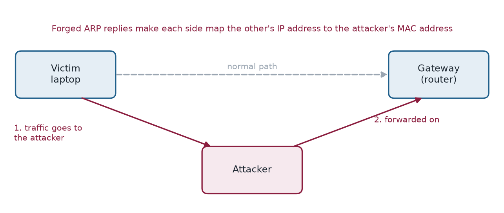
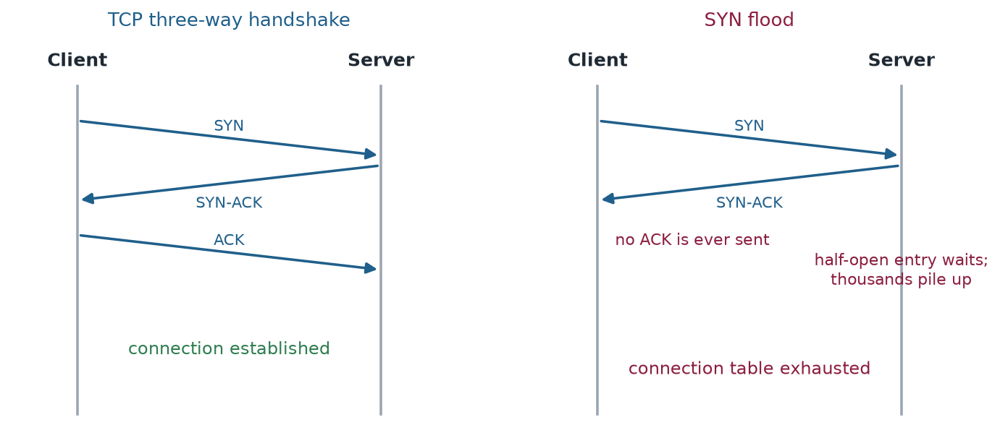
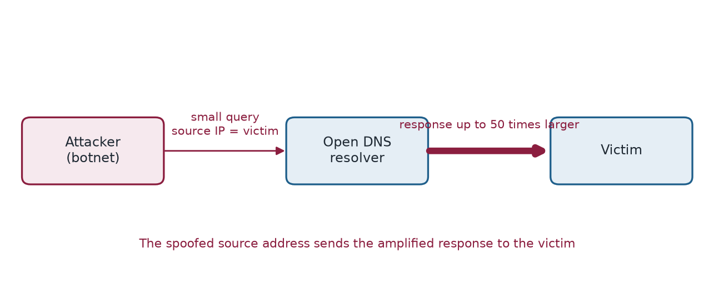

Chapter 2: Network Attacks¶
Network attacks target the roads of the internet: the protocols, the devices and the traffic that carry data between computers. They exploit the fact that many core protocols were designed when every participant could be trusted. This chapter covers interception (man-in-the-middle, sniffing), forgery (IP spoofing, DNS spoofing, replay) and flooding (DoS and DDoS), and shows how a few simple ideas, such as pretending to be someone else's address, underlie them all.
Layman analogy
Think of the internet as a global postal system. Network attacks are like intercepting mail, forging return addresses, flooding the sorting office with fake letters, or redirecting parcels to the wrong destination.
2.1 Man-in-the-Middle (MitM) Attack¶
The attacker secretly inserts themselves between two communicating parties, intercepting — and potentially altering — all communications without either party realising.
ARP Poisoning¶
ARP (Address Resolution Protocol) maps IP addresses to physical hardware (MAC) addresses on a local network. The attacker sends fake ARP messages, poisoning devices into sending traffic to the attacker's machine instead of the intended recipient.
Layman analogy
Forging name labels on every mailbox in an apartment building so that your neighbours' post is delivered to your door instead.
SSL Stripping¶
The attacker intercepts the connection between a user and a website, downgrading a secure HTTPS connection to an unencrypted HTTP connection. The user thinks they are on a secure site; the attacker can read everything.
Layman analogy
Converting a sealed, tamper-proof courier envelope into an open postcard that anyone can read as it travels through the postal system.
BGP Hijacking¶
BGP (Border Gateway Protocol) is the routing system of the internet. Attackers announce false routes, redirecting internet traffic through their infrastructure before passing it to the legitimate destination.
Layman analogy
Changing motorway exit signs so that traffic heading to London gets routed through a different town where it can be monitored or tampered with, before eventually arriving at the correct destination.
Example 2.1: BGP Hijacking
In 2010, China Telecom advertised routes for 15% of the world's internet traffic through Chinese servers, rerouting data from governments, military networks, and large corporations for 18 minutes.

2.2 DoS and DDoS Attacks¶
A Denial of Service (DoS) attack uses a single source to overwhelm a target. A Distributed DoS (DDoS) attack uses thousands or millions of compromised computers (a botnet) simultaneously, making it nearly impossible to block.
Layman analogy
DoS is one person blocking a shop doorway. DDoS is 10,000 people simultaneously blocking every entrance, exit, and window of the building.
Volume-Based Attacks: Saturate bandwidth with massive traffic.
- UDP Flood — spoof source IP and flood all ports with UDP packets
- ICMP Flood — overwhelm target with ping requests
- DNS Amplification — small request generates 50x larger response sent to victim
- NTP Amplification — uses time servers that respond up to 556x the request size
Protocol-Based Attacks: Exhaust server or network equipment resources.
- SYN Flood — exploit TCP handshake; server stores half-open connections until memory is exhausted
- Ping of Death — malformed oversized packets crash systems on reassembly
- Smurf Attack — broadcast ICMP with spoofed victim IP; entire network replies to victim
Application Layer Attacks: Target specific services with lower traffic volumes — harder to detect.
- HTTP Flood — legitimate-looking requests overwhelm web server
- Slowloris — thousands of slow, partial connections exhaust the server's connection limit
- RUDY (R-U-Dead-Yet) — extremely slow POST bodies tie up server threads indefinitely
Example 2.2: DoS and DDoS Attacks
- 2016: Mirai botnet hit Dyn DNS at 1.2 Tbps — took down Twitter, Netflix, Reddit.
- 2018: GitHub survived 1.35 Tbps memcached amplification.
- 2020: AWS Shield stopped 2.3 Tbps — the largest DDoS recorded at that time.
- 2022: Google blocked 46 million requests/second HTTPS flood from thousands of sources.


Example 2.2b: the arithmetic of amplification
A botnet sends 20 Mbit/s of spoofed DNS queries. Each response is up to 50 times larger than the query, so the traffic aimed at the victim is \(20\times50=1000\) Mbit/s, which is 1 Gbit/s. The attacker pays for 20 Mbit/s and the victim receives fifty times more. This is why amplification attacks are favoured, and why filtering spoofed source addresses (BCP38) matters: if the forged query never leaves the attacker's network, there is nothing to amplify.
2.3 Packet Sniffing¶
Capturing raw network packets as they travel through the network. On unencrypted networks, packet contents are fully readable.
- Active Sniffing — ARP/MAC flooding to capture traffic on switched networks
- Passive Sniffing — simply listening on hub-based networks (no interference needed)
- Promiscuous Mode — configuring a network card to capture ALL traffic, not just traffic addressed to it
Example 2.3: Packet Sniffing
On an unencrypted public Wi-Fi network, any attacker running Wireshark can see every website you visit, every form you submit, and every cookie your browser sends — including login session tokens.
2.4 DNS Spoofing / Cache Poisoning¶
DNS (Domain Name System) is the internet's "phone book" — it translates domain names (google.com) into IP addresses. An attacker corrupts DNS records to redirect legitimate lookups to malicious servers.
Layman analogy
Someone has tampered with the phone book so that when you look up your bank's phone number, you get the attacker's number instead. You call it thinking it's your bank.
- Cache Poisoning — inject false DNS records into a resolver's cache
- DNS Hijacking via Router — change router DNS settings to attacker-controlled servers
- Authoritative Server Compromise — hack the actual DNS authority for a domain
2.5 IP Spoofing¶
Forging the source IP address in network packets to impersonate another host or bypass IP-based security filters.
Layman analogy
Sending a letter with someone else's return address. The recipient thinks the letter came from the faked address and may act accordingly.
- Used in DDoS amplification — send requests with victim's IP so amplified responses flood the victim
- Blind spoofing — no response needed; used for one-way attacks
- Non-blind spoofing — attacker is on the same subnet and can observe responses
2.6 Replay Attack¶
The attacker captures a valid authentication token or data packet and retransmits it later to gain unauthorised access, without ever cracking the password.
Layman analogy
Recording the exact beep sequence of your garage door opener, then playing the recording back later to open the garage — without knowing the code yourself.
2.7 Defence tips¶
- Always use HTTPS — look for the padlock icon in your browser address bar
- Use a VPN (Virtual Private Network) on any public Wi-Fi network
- Enable DNSSEC on your domains to cryptographically verify DNS responses
- Use DDoS mitigation services like Cloudflare or AWS Shield for critical services
- Configure firewalls to block packets with spoofed source IP addresses (BCP38 standard)
2.8 Summary¶
- Man-in-the-middle attacks insert the attacker into a conversation: ARP poisoning on a local network, SSL stripping to downgrade HTTPS, BGP hijacking to reroute traffic across the internet.
- Spoofing attacks forge an identity: IP spoofing forges a source address, DNS spoofing corrupts the address book; replay retransmits a captured valid message.
- DoS and DDoS attacks exhaust bandwidth, server resources or an application, and amplification lets a small request produce a large response aimed at the victim.
- Defences: HTTPS, VPNs, DNSSEC, DDoS mitigation services and filtering of spoofed source addresses (BCP38).
2.9 Exercises¶
-
Describe ARP poisoning in two sentences. Why does it work only on a local network?
Answer
ARP maps IP addresses to hardware (MAC) addresses on a local network. The attacker sends forged ARP messages that make other devices believe the attacker's MAC address belongs to the gateway (or another host), so their traffic flows through the attacker. ARP operates only within one local network segment, so the attacker must be on it.
-
A botnet sends 40 Mbit/s of spoofed DNS queries to open resolvers whose responses are 50 times larger than the queries. What traffic reaches the victim?
Answer
\(40\times50=2000\) Mbit/s, or 2 Gbit/s. The attacker spends 40 Mbit/s and the victim receives fifty times as much, which is why amplification is attractive.
-
Explain how a SYN flood exhausts a server, and how SYN cookies defend against it.
Answer
The attacker sends many SYN packets and never completes the handshake with the final ACK. The server allocates memory for each half-open connection and waits until its table is full. SYN cookies encode the needed state in the sequence number of the SYN-ACK, so the server stores nothing until a valid ACK returns.
-
Distinguish blind from non-blind IP spoofing.
Answer
In blind spoofing the attacker forges the source address and cannot see replies, so it suits one-way attacks such as floods. In non-blind spoofing the attacker is on the same subnet and can observe the responses, so it can take part in a two-way exchange.
-
A user visits a site that normally uses HTTPS but the browser shows plain HTTP after an attacker on the network intervened. Which attack is this, and why is "always use HTTPS" not a complete answer?
Answer
This is SSL stripping: the attacker downgrades the connection to HTTP. The user must still notice the missing padlock. Sites can prevent the downgrade by telling browsers to use HTTPS only (HTTP Strict Transport Security), and a VPN protects traffic on untrusted networks.